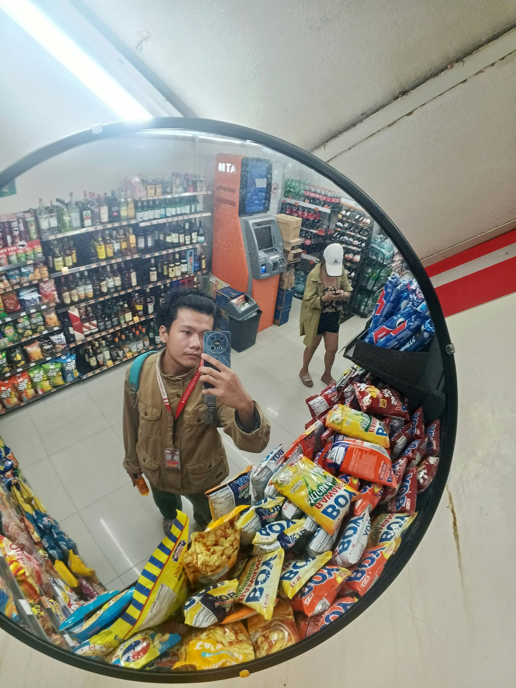

BS Information Technology — Batangas State University
I build things with code. Currently a 2nd-year student figuring it out one commit at a time.

I'm Jaypi, an IT student who loves coding and building random app ideas. Currently in my second year at Batangas State University — Alangilan Campus, figuring things out one commit at a time. This portfolio is part of that journey.
Freelance video editing using CapCut. Cutting, transitions, effects, and color grading for short-form and long-form content.
A Python-based system to track and manage items, quantities, and inventory data.